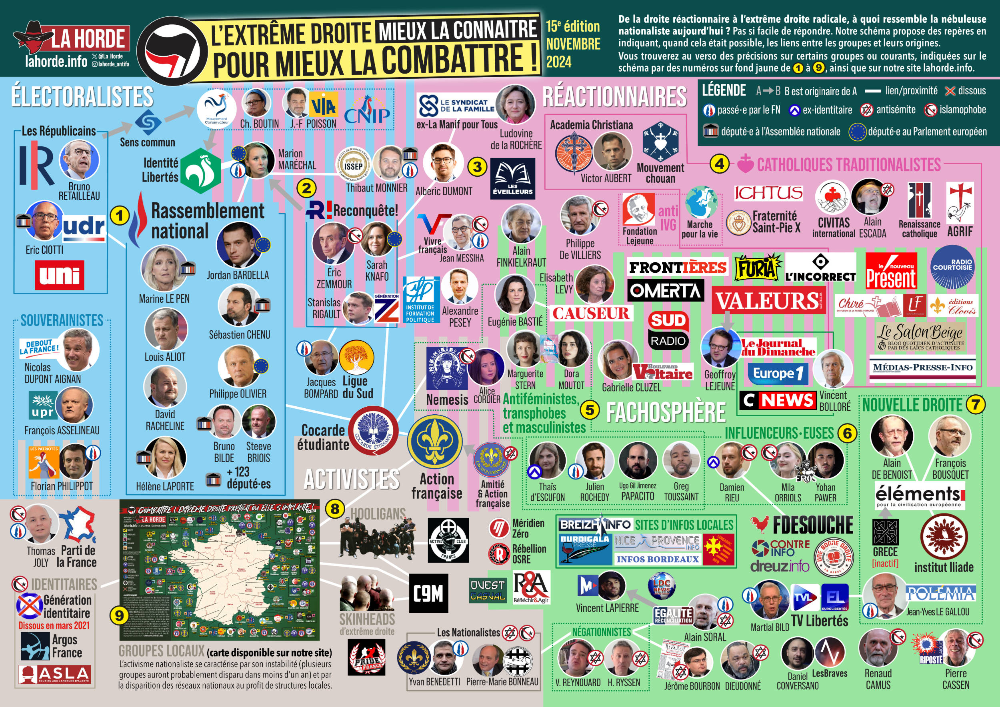

Le collectif antifasciste La Horde met à jour depuis des années un grand schéma de la nébuleuse nationaliste française, de la droite réactionnaire à l'extrême droite radicale. Voici la 15e édition, de novembre 2024, reproduite avec l'accord de La Horde.

Lire la légende
| Signe | Sens |
|---|---|
| A → B | B est issu de A (une scission, un départ, une filiation) |
| Trait blanc | lien ou proximité entre deux personnes ou structures |
| Croix rouge | structure dissoute |
| Flamme tricolore | personne passée par le Front national |
| Lambda | ancien·ne identitaire |
| Étoile barrée / croissant barré | antisémite / islamophobe |
| Hémicycle / étoiles européennes | député·e à l'Assemblée nationale / au Parlement européen |
| Numéros 1 à 9 sur fond jaune | renvoient aux précisions détaillées au verso et sur le site de La Horde |
Les électoralistes
Les partis qui visent le pouvoir par les urnes, et leurs passerelles avec la droite.
- Rassemblement national : Marine Le Pen, Jordan Bardella, Louis Aliot, Sébastien Chenu, David Rachline, Philippe Olivier, Bruno Bilde, Steeve Briois, Hélène Laporte, et plus de 120 député·es.
- Union des droites (UDR) d'Éric Ciotti, allié du RN ; le syndicat étudiant UNI ; la frange droitière des Républicains (Bruno Retailleau), avec Sens commun et le Mouvement conservateur.
- Reconquête ! : Éric Zemmour, Sarah Knafo, Stanislas Rigault et Génération Z.
- Identité-Libertés de Marion Maréchal, passée par le FN puis par Reconquête.
- Les souverainistes : Debout la France (Nicolas Dupont-Aignan), UPR (François Asselineau), Les Patriotes (Florian Philippot).
- Autour : la Ligue du Sud (Jacques Bompard), Vivre français (Jean Messiha), le CNIP, VIA, Christine Boutin et Jean-Frédéric Poisson.
- Les écoles de cadres : l'ISSEP de Marion Maréchal (Thibaut Monnier) et l'Institut de formation politique (Alexandre Pesey).
Les réactionnaires
La droite de la « guerre culturelle » : personnalités, médias et collectifs.
- Personnalités : Philippe de Villiers, Alain Finkielkraut, Élisabeth Lévy, Eugénie Bastié, Alberic Dumont et Les Éveilleurs, Ludovine de La Rochère et le Syndicat de la famille (ex-Manif pour tous).
- Médias : CNews, Europe 1, Le Journal du dimanche (Geoffroy Lejeune), Valeurs actuelles, Causeur, L'Incorrect, Frontières, Omerta, Furia, Sud Radio, Boulevard Voltaire (Gabrielle Cluzel), réunis pour une grande part dans l'empire de Vincent Bolloré.
- Antiféministes, transphobes et masculinistes : le collectif Nemesis (Alice Cordier), Marguerite Stern, Dora Moutot.
- Jeunesse : la Cocarde étudiante.
Les catholiques traditionalistes
- Mouvements : Academia Christiana (Victor Aubert), le Mouvement chouan, Ichtus, Civitas (Alain Escada, structure dissoute), Renaissance catholique, l'AGRIF, la Fraternité Saint-Pie-X.
- Anti-IVG : la Fondation Lejeune, la Marche pour la vie.
- Médias et éditions : Radio Courtoisie, Le nouveau Présent, Le Salon beige, Médias-Presse-Info, Chiré, les éditions Clovis.
La fachosphère
- Influenceurs et influenceuses : Thaïs d'Escufon, Julien Rochedy, Papacito, Greg Toussaint, Damien Rieu, Mila Orriols, Yohan Pawer.
- Sites : Fdesouche, Contre-Info, Dreuz.info, et les sites d'« infos locales » (Breizh Info, Infos Bordeaux, Nice-Provence Info, Burdigala…).
- Télés et radios en ligne : TV Libertés (Martial Bild), EuroLibertés, Méridien Zéro.
- Complotisme et antisémitisme : Égalité & Réconciliation (Alain Soral), Vincent Lapierre, Dieudonné ; négationnistes : Vincent Reynouard, Hervé Ryssen, le journal Rivarol (Jérôme Bourbon).
- Islamophobie et « grand remplacement » : Renaud Camus, Riposte laïque (Pierre Cassen), Daniel Conversano.
La Nouvelle Droite
La « fabrique à idées » : le GRECE (aujourd'hui inactif), Alain de Benoist, François Bousquet et la revue Éléments, l'Institut Iliade, et Polémia (Jean-Yves Le Gallou). Elle nourrit les identitaires et une partie des partis.
Les activistes
- Royalistes : l'Action française, plus vieux mouvement nationaliste encore actif, et Amitié & Action française.
- Identitaires : Génération identitaire (dissous en mars 2021), Argos France, et l'ASLA, qui collecte des fonds pour les militant·es.
- Nationalistes radicaux : le Parti de la France (Thomas Joly), Les Nationalistes (Yvan Benedetti, Pierre-Marie Bonneau), Rébellion / OSRE, Réfléchir & Agir.
- Rue et violence : les Active Clubs, le C9M, Ouest Casual, les hooligans, les skinheads d'extrême droite.
- Groupes locaux : nombreux, instables, souvent éphémères ; ils ont leur propre carte, ci-dessous.
À retenir
- L'extrême droite n'est pas qu'un parti : c'est un écosystème où élus, médias, idéologues et groupes de rue se renforcent.
- Les flèches et les traits du schéma montrent la circulation des militant·es d'une structure à l'autre.
- Suite : la carte des groupes locaux et comment agir.
Fiche rédigée par Mamie Commune d'après les ressources publiées par le site antifasciste La Horde. Les originaux (schéma, carte, livre) sont disponibles sur leur site.